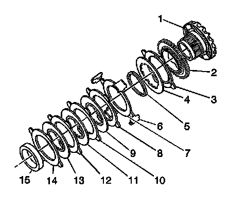
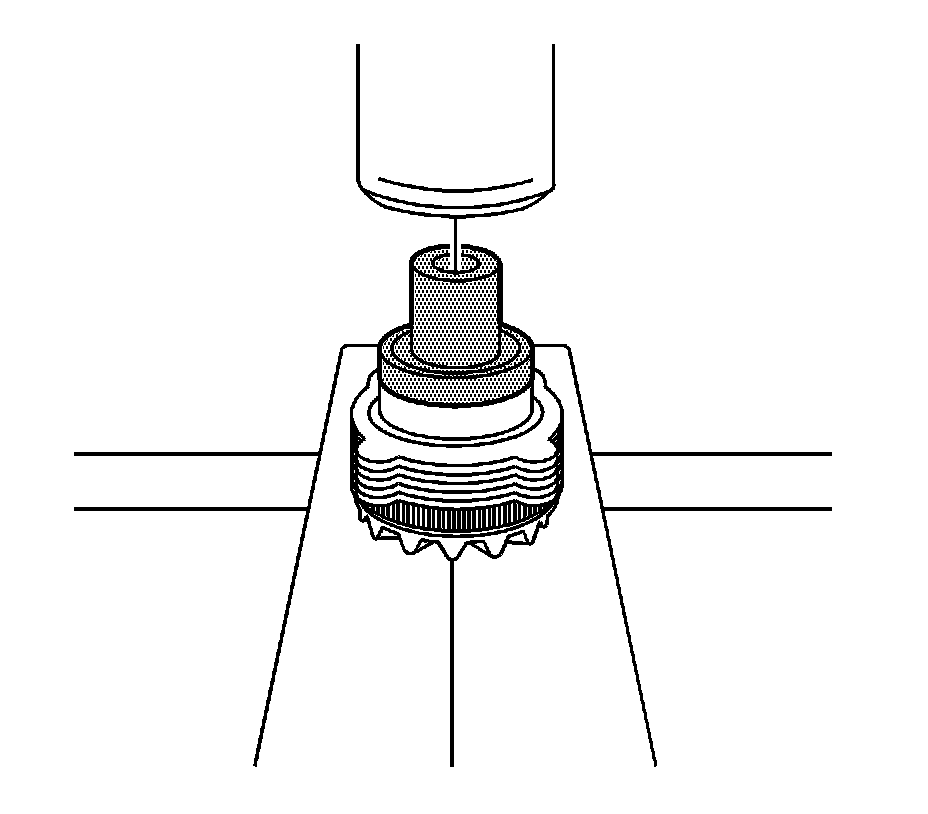

Locking Differential Cam Unit Assemble (9.5 Inch Axle)
Locking Differential Cam Unit Assemble (9.5 Inch Axle)
Tools Required
J 29710 Differential Side Bearing Installer

1. Apply axle lubricant, GM P/N 12378261 (Canadian P/N 10953455) or equivalent meeting GM Specification 9986115, to the surface of each disc.
2. Assemble the left side or the flange-end side locking differential side gear cam unit and clutch disc assembly as follows:
1. Install the cam plate (2) to the cam side gear (1).
2. Install the carbon-faced eared disc (3).
3. Install the fuse disc (4).
4. Install the wave washer (5).
5. Install the 1st non-carbon eared disc (7).
6. Install the 2nd non-carbon eared disc (8).
7. Install the 1st splined disc (9).
8. Install the 3rd non-carbon eared disc (10).
9. Install the 2nd splined disc (11).
10. Install the 4th non-carbon eared disc (12).
11. Install the 3rd splined disc (13).
12. Install the 5th non-carbon eared disc (14).
13. Align the splined discs with the teeth on the cam plate in order to compress the clutch disc assembly.
3. Install the thrust sleeve (15) onto the cam side gear.

4. Install the thrust sleeve onto the cam side gear using a hydraulic press and the J 29710, if necessary, until the thrust sleeve is fully seated onto the locking differential cam gear.
5. If the cam side gear or the thrust sleeve has been replaced, measure the overall length of the gear assembly by doing the following:
1. Place the locking differential clutch disc thrust washer on top of the thrust sleeve.
2. Measure the overall length of the gear assembly from the front of the cam side gear to the back of the locking differential clutch disc thrust washer.
3. Compare this measurement to the measurement obtained during disassembly.
4. If the new reading is more than 0.762 mm (0.003 in) higher or lower than the original, select a locking differential clutch disc thrust washer that will return the reading closest to the original reading.
6. Align the ears of all the clutch discs.
7. Install the guide clips to the clutch disc assembly.
Apply chassis grease, GM P/N 12377985 (Canadian P/N 88901242) or equivalent, to the guide clips in order to hold the clips in place on the disc ears.